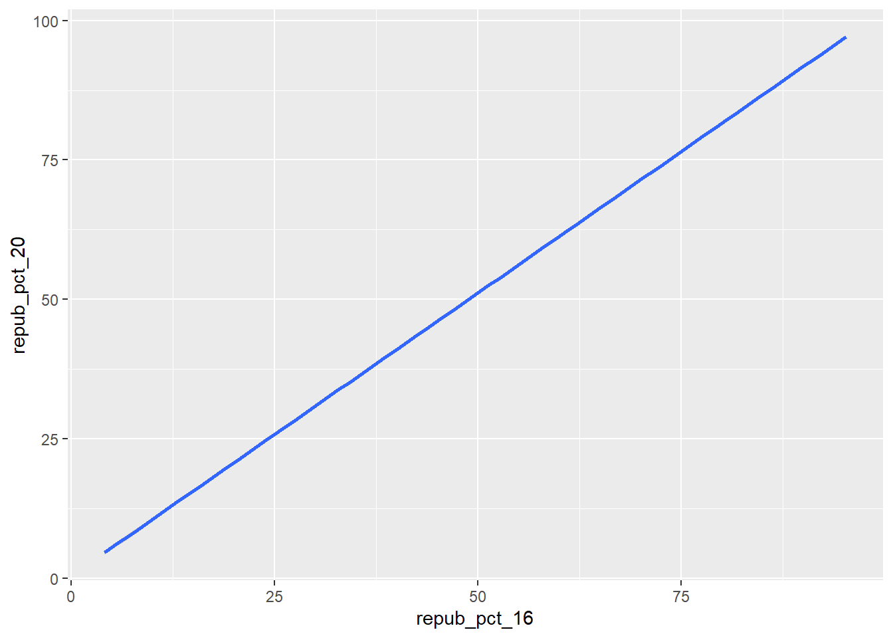
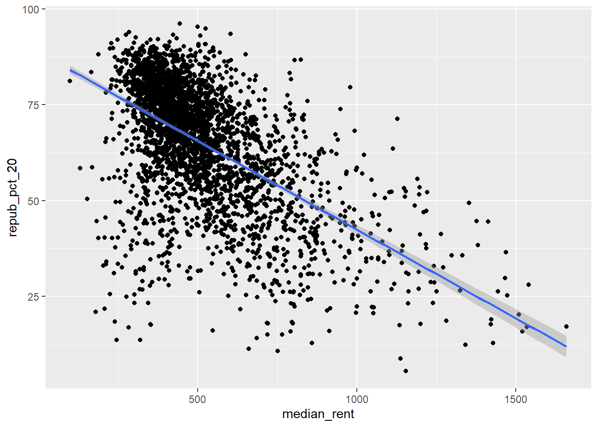
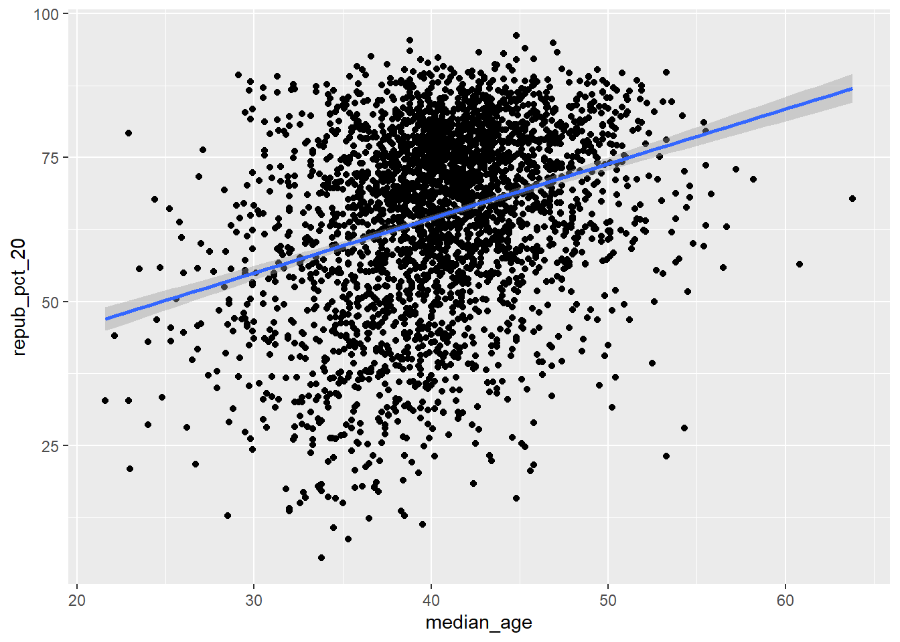
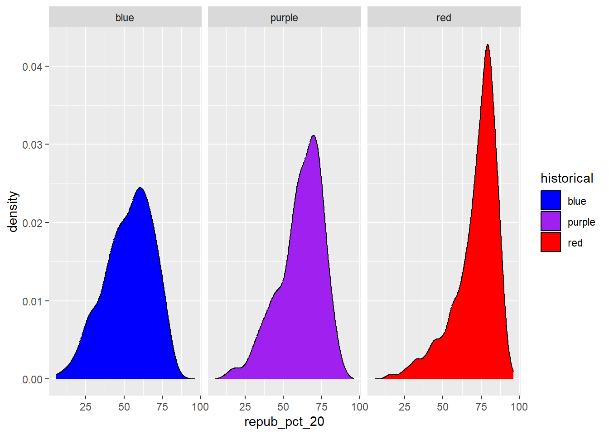
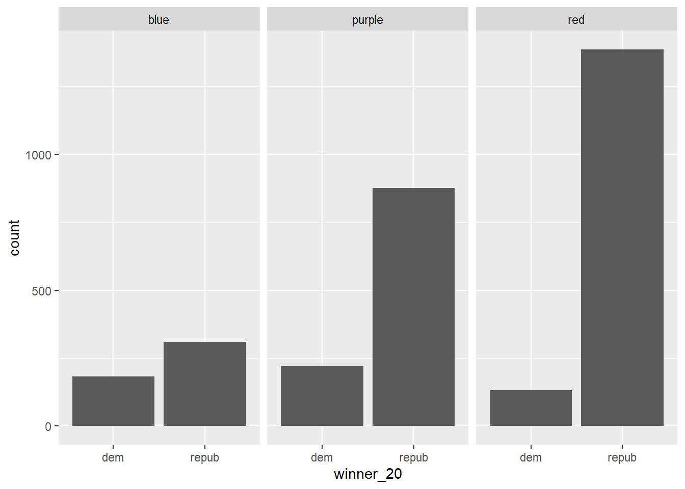
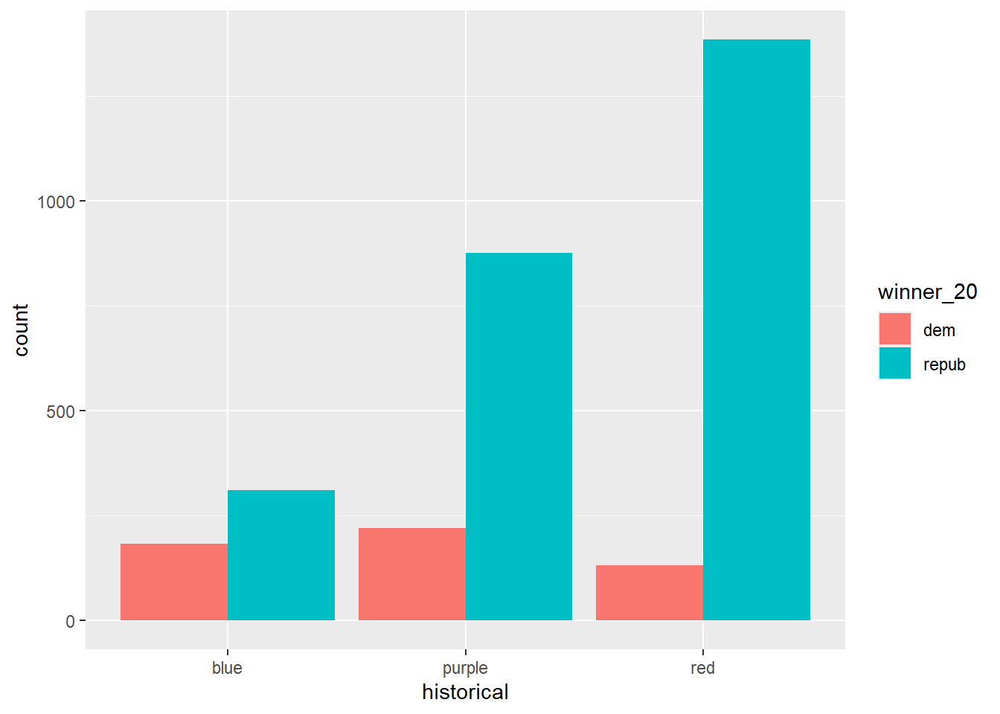

# Import datasurvey <-read.csv("https://hash-mac.github.io/stat112site-s25/data/survey.csv")# How many students have now filled out the survey?nrow(survey)
[1] 49
# What type of variables do we have?str(survey)
'data.frame': 49 obs. of 4 variables:
$ cafe_mac : chr "mashed potatoes" "is tasty" "burger" "caesar salad" ...
$ minutes_to_campus: int 5 5 5 12 0 10 5 0 0 5 ...
$ fav_temp_c : num 26 28 19 18 24 -10 21 25 18 25 ...
$ hangout : chr "the mountains" "a city" "a forest" "a forest" ...
library(tidyverse)
── Attaching core tidyverse packages ──────────────────────── tidyverse 2.0.0 ──
✔ dplyr 1.1.4 ✔ readr 2.1.5
✔ forcats 1.0.0 ✔ stringr 1.5.1
✔ ggplot2 3.5.1 ✔ tibble 3.2.1
✔ lubridate 1.9.3 ✔ tidyr 1.3.1
✔ purrr 1.0.2
── Conflicts ────────────────────────────────────────── tidyverse_conflicts() ──
✖ dplyr::filter() masks stats::filter()
✖ dplyr::lag() masks stats::lag()
ℹ Use the conflicted package (<http://conflicted.r-lib.org/>) to force all conflicts to become errors
# Set up the plotting frame# How does this differ than the frame for our histogram of repub_pct_20 alone?ggplot(elections, aes(y = repub_pct_20, x = repub_pct_16))
# Add a layer of points for each county# Take note of the geom!ggplot(elections, aes(y = repub_pct_20, x = repub_pct_16)) +geom_point()
# Change the shape of the points# What happens if you change the shape to another number?ggplot(elections, aes(y = repub_pct_20, x = repub_pct_16)) +geom_point(shape =3)
# YOU TRY: Modify the code to make the points "orange"# NOTE: Try to anticipate if "color" or "fill" will be useful here. Then try both.ggplot(elections, aes(y = repub_pct_20, x = repub_pct_16)) +geom_point(color ="orange")
# Add a layer that represents each county by the state it's in# Take note of the geom and the info it needs to run!ggplot(elections, aes(y = repub_pct_20, x = repub_pct_16)) +geom_text(aes(label = state_abbr))
ggplot(elections, aes(y = repub_pct_20, x = repub_pct_16)) +geom_point() +geom_smooth()
`geom_smooth()` using method = 'gam' and formula = 'y ~ s(x, bs = "cs")'
ggplot(elections, aes(y = repub_pct_20, x = repub_pct_16)) +geom_smooth()
`geom_smooth()` using method = 'gam' and formula = 'y ~ s(x, bs = "cs")'
ggplot(elections, aes(y = repub_pct_20, x = repub_pct_16)) +geom_point() +geom_smooth(method ="lm")
`geom_smooth()` using formula = 'y ~ x'
ggplot(elections, aes(y = repub_pct_20, x = repub_pct_16)) +geom_smooth(method ="lm")
`geom_smooth()` using formula = 'y ~ x'

ggplot(elections, aes(y = repub_pct_20, x = median_rent)) +geom_point() +geom_smooth(method ="lm")
`geom_smooth()` using formula = 'y ~ x'

ggplot(elections, aes(y = repub_pct_20, x = median_age)) +geom_point() +geom_smooth(method ="lm")
`geom_smooth()` using formula = 'y ~ x'

8.4 Numerical vs Categorical
ggplot(elections, aes(y = repub_pct_20, x = historical)) +geom_point()
# Name two "bad" things about this plotggplot(elections, aes(x = repub_pct_20, fill = historical)) +geom_density()
# What does scale_fill_manual do?ggplot(elections, aes(x = repub_pct_20, fill = historical)) +geom_density() +scale_fill_manual(values =c("blue", "purple", "red"))
# What does alpha = 0.5 do?# Play around with different values of alpha, between 0 and 1ggplot(elections, aes(x = repub_pct_20, fill = historical)) +geom_density(alpha =0.5) +scale_fill_manual(values =c("blue", "purple", "red"))
# What does facet_wrap do?!ggplot(elections, aes(x = repub_pct_20, fill = historical)) +geom_density() +scale_fill_manual(values =c("blue", "purple", "red")) +facet_wrap(~ historical)

# Let's try a similar grouping strategy with a histogram instead of density plot.# Why is this terrible?ggplot(elections, aes(x = repub_pct_20, fill = historical)) +geom_histogram(color ="white") +scale_fill_manual(values =c("blue", "purple", "red"))
`stat_bin()` using `bins = 30`. Pick better value with `binwidth`.
9 Categorical x Categorical
# Plot 1: adjust this to recreate the top plotggplot(elections, aes(x = historical)) +geom_bar()
# A stacked bar plot# How are the "historical" and "winner_20" variables mapped to the plot, i.e. what roles do they play?ggplot(elections, aes(x = historical, fill = winner_20)) +geom_bar()
# A faceted bar plotggplot(elections, aes(x = winner_20)) +geom_bar() +facet_wrap(~ historical)

# A side-by-side bar plot# Note the new argument to geom_barggplot(elections, aes(x = historical, fill = winner_20)) +geom_bar(position ="dodge")

# A proportional bar plot# Note the new argument to geom_barggplot(elections, aes(x = historical, fill = winner_20)) +geom_bar(position ="fill")
'data.frame': 2367 obs. of 24 variables:
$ date : chr "2020-01-01" "2020-01-02" "2020-01-03" "2020-01-04" ...
$ location : chr "Wollongong" "Wollongong" "Wollongong" "Wollongong" ...
$ mintemp : num 17.1 17.7 19.7 20.4 19.8 18.3 19.9 20.1 19.8 20.5 ...
$ maxtemp : num 23.1 24.2 26.8 35.5 21.4 22.9 25.6 23.2 23.1 25.4 ...
$ rainfall : num 0 0 0 0 0 0 0.8 1.6 0 0 ...
$ evaporation : num NA NA NA NA NA NA NA NA NA NA ...
$ sunshine : num NA NA NA NA NA NA NA NA NA NA ...
$ windgustdir : chr "SSW" "SSW" "NE" "SSW" ...
$ windgustspeed: int 39 37 41 78 57 35 44 41 39 56 ...
$ winddir9am : chr "SSW" "S" "NNW" "NE" ...
$ winddir3pm : chr "SSE" "ENE" "NNE" "NNE" ...
$ windspeed9am : int 20 13 7 15 31 17 30 31 24 19 ...
$ windspeed3pm : int 15 15 17 17 35 20 7 33 26 39 ...
$ humidity9am : int 69 72 72 77 70 71 76 77 76 79 ...
$ humidity3pm : int 64 54 71 69 75 71 72 76 79 76 ...
$ pressure9am : num 1015 1020 1018 1009 1019 ...
$ pressure3pm : num 1014 1018 1013 1004 1020 ...
$ cloud9am : int 8 7 6 NA NA NA NA 8 NA NA ...
$ cloud3pm : int 1 1 NA NA 7 NA NA NA NA NA ...
$ temp9am : num 19.1 19.8 23.4 24.5 20.7 20.9 22.9 21.3 21.2 23 ...
$ temp3pm : num 22.9 23.6 25.7 26.7 20 22.6 24.9 22.2 22.2 25.1 ...
$ raintoday : chr "No" "No" "No" "No" ...
$ risk_mm : num 0 0 0 0 0 0.8 1.6 0 0 1 ...
$ raintomorrow : chr "No" "No" "No" "No" ...
# How do 3pm temperatures (temp3pm) differ by location?ggplot(data = weather, mapping =aes(x = temp3pm, fill = location)) +geom_density() +facet_wrap(~location)
Warning: Removed 19 rows containing non-finite outside the scale range
(`stat_density()`).
# How might we predict the 3pm temperature (temp3pm) by the 9am temperature (temp9am)?ggplot(data = weather, mapping =aes(x = temp9am, y = temp3pm)) +geom_point() +geom_smooth(method ="lm")
`geom_smooth()` using formula = 'y ~ x'
Warning: Removed 27 rows containing non-finite outside the scale range
(`stat_smooth()`).
Warning: Removed 27 rows containing missing values or values outside the scale range
(`geom_point()`).
---title: "Bivariate Viz"---## Review```{r}# Import datasurvey <-read.csv("https://hash-mac.github.io/stat112site-s25/data/survey.csv")# How many students have now filled out the survey?nrow(survey)# What type of variables do we have?str(survey)``````{r}library(tidyverse)``````{r}ggplot(data = survey, mapping =aes(x = hangout)) +geom_bar()``````{r}ggplot(data = survey, mapping =aes(x = fav_temp_c)) +geom_histogram()``````{r}ggplot(data = survey, mapping =aes(x = fav_temp_c)) +geom_density()``````{r}data.frame(temp_3pm =c(24, 26, 20, 15, 15, 15), temp_9am =c(14, 18, 15, 13, 11, 11))``````{r}weather <-data.frame(temp_3pm =c(24, 26, 20, 15, 15, 0, 40, 60, 57, 44, 51, 75),location =rep(c("A", "B"), each =6))weather``````{r}ggplot(weather, aes(x = temp_3pm)) +geom_density()``````{r}ggplot(weather, aes(x = temp_3pm, colour = location)) +geom_density()``````{r}weather <-data.frame(rain_today =c("no", "no", "no", "no", "yes", "no", "yes", "no", "yes", "yes", "no", "yes"),location =c(rep("A", 7), rep("B", 5))) weather``````{r}ggplot(weather, aes(x = location)) +geom_bar()``````{r}ggplot(weather, aes(x = location, fill = rain_today)) +geom_bar()```## Excercises```{r}# Load dataelections <-read.csv("https://mac-stat.github.io/data/election_2020_county.csv")# Check it outhead(elections)str(elections)``````{r}ggplot(data = elections, mapping =aes(x = winner_20)) +geom_bar()``````{r}ggplot(data = elections, mapping =aes(x = repub_pct_20)) +geom_histogram()```## Numerical vs Numerical```{r}ggplot(data = elections, mapping =aes(x = repub_pct_16, y = repub_pct_20)) +geom_point()``````{r}# Set up the plotting frame# How does this differ than the frame for our histogram of repub_pct_20 alone?ggplot(elections, aes(y = repub_pct_20, x = repub_pct_16))``````{r}# Add a layer of points for each county# Take note of the geom!ggplot(elections, aes(y = repub_pct_20, x = repub_pct_16)) +geom_point()``````{r}# Change the shape of the points# What happens if you change the shape to another number?ggplot(elections, aes(y = repub_pct_20, x = repub_pct_16)) +geom_point(shape =3)``````{r}# YOU TRY: Modify the code to make the points "orange"# NOTE: Try to anticipate if "color" or "fill" will be useful here. Then try both.ggplot(elections, aes(y = repub_pct_20, x = repub_pct_16)) +geom_point(color ="orange")``````{r}# Add a layer that represents each county by the state it's in# Take note of the geom and the info it needs to run!ggplot(elections, aes(y = repub_pct_20, x = repub_pct_16)) +geom_text(aes(label = state_abbr))``````{r}ggplot(elections, aes(y = repub_pct_20, x = repub_pct_16)) +geom_point() +geom_smooth()``````{r}ggplot(elections, aes(y = repub_pct_20, x = repub_pct_16)) +geom_smooth()``````{r}ggplot(elections, aes(y = repub_pct_20, x = repub_pct_16)) +geom_point() +geom_smooth(method ="lm")``````{r}ggplot(elections, aes(y = repub_pct_20, x = repub_pct_16)) +geom_smooth(method ="lm")``````{r}ggplot(elections, aes(y = repub_pct_20, x = median_rent)) +geom_point() +geom_smooth(method ="lm")``````{r}ggplot(elections, aes(y = repub_pct_20, x = median_age)) +geom_point() +geom_smooth(method ="lm")```## Numerical vs Categorical```{r}ggplot(elections, aes(y = repub_pct_20, x = historical)) +geom_point()``````{r}# Side-by-side violin plotsggplot(elections, aes(y = repub_pct_20, x = historical)) +geom_violin()``````{r}# Side-by-side boxplots (defined below)ggplot(elections, aes(y = repub_pct_20, x = historical)) +geom_boxplot()``````{r}ggplot(elections, aes(x = repub_pct_20, colour = historical)) +geom_density()``````{r}# Name two "bad" things about this plotggplot(elections, aes(x = repub_pct_20, fill = historical)) +geom_density()``````{r}# What does scale_fill_manual do?ggplot(elections, aes(x = repub_pct_20, fill = historical)) +geom_density() +scale_fill_manual(values =c("blue", "purple", "red"))``````{r}# What does alpha = 0.5 do?# Play around with different values of alpha, between 0 and 1ggplot(elections, aes(x = repub_pct_20, fill = historical)) +geom_density(alpha =0.5) +scale_fill_manual(values =c("blue", "purple", "red"))``````{r}# What does facet_wrap do?!ggplot(elections, aes(x = repub_pct_20, fill = historical)) +geom_density() +scale_fill_manual(values =c("blue", "purple", "red")) +facet_wrap(~ historical)``````{r}# Let's try a similar grouping strategy with a histogram instead of density plot.# Why is this terrible?ggplot(elections, aes(x = repub_pct_20, fill = historical)) +geom_histogram(color ="white") +scale_fill_manual(values =c("blue", "purple", "red"))```# Categorical x Categorical```{r}# Plot 1: adjust this to recreate the top plotggplot(elections, aes(x = historical)) +geom_bar()``````{r}# A stacked bar plot# How are the "historical" and "winner_20" variables mapped to the plot, i.e. what roles do they play?ggplot(elections, aes(x = historical, fill = winner_20)) +geom_bar()``````{r}# A faceted bar plotggplot(elections, aes(x = winner_20)) +geom_bar() +facet_wrap(~ historical)``````{r}# A side-by-side bar plot# Note the new argument to geom_barggplot(elections, aes(x = historical, fill = winner_20)) +geom_bar(position ="dodge")``````{r}# A proportional bar plot# Note the new argument to geom_barggplot(elections, aes(x = historical, fill = winner_20)) +geom_bar(position ="fill")```## Australia Temp```{r}weather <-read.csv("https://mac-stat.github.io/data/weather_3_locations.csv")str(weather)``````{r}# How do 3pm temperatures (temp3pm) differ by location?ggplot(data = weather, mapping =aes(x = temp3pm, fill = location)) +geom_density() +facet_wrap(~location)``````{r}# How might we predict the 3pm temperature (temp3pm) by the 9am temperature (temp9am)?ggplot(data = weather, mapping =aes(x = temp9am, y = temp3pm)) +geom_point() +geom_smooth(method ="lm")``````{r}ggplot(data = weather, mapping =aes(x = raintoday, fill = location)) +geom_bar(position ="fill")```## Optional```{r}ggplot(elections, aes(x = repub_pct_20, fill = state_abbr)) +geom_density(alpha =0.5)``````{r}ggplot(data = elections, mapping =aes(x = repub_pct_20)) +geom_density() +facet_wrap(~state_abbr)``````{r}library(ggridges)``````{r}ggplot(data = elections, mapping =aes(x = repub_pct_20, y = state_abbr)) +geom_density_ridges()``````{r}ggplot(data = elections, mapping =aes(x = repub_pct_20, y =fct_reorder(state_abbr, repub_pct_20),fill = historical)) +geom_density_ridges(alpha = .5) +scale_fill_manual(values =c("blue", "purple", "red"))``````{r}elections_by_state <-read.csv("https://mac-stat.github.io/data/election_2020_by_state.csv")``````{r}ggplot(data = elections_by_state,mapping =aes(y = repub_pct_20, x = repub_pct_16)) +geom_point()``````{r}ggplot(data = elections_by_state,mapping =aes(y = state_abbr, x = repub_pct_20)) +geom_point()``````{r}#| fig-height: 10#| fig-width: 5ggplot(data = elections_by_state,mapping =aes(x = repub_pct_20,y =fct_reorder(state_abbr, repub_pct_20))) +geom_point()``````{r}#| fig-height: 10#| fig-width: 5ggplot(data = elections_by_state,mapping =aes(x = repub_pct_20,y =fct_reorder(state_abbr, repub_pct_20))) +geom_point(color ="red") +geom_point(mapping =aes(x = repub_pct_16, y = state_abbr))```